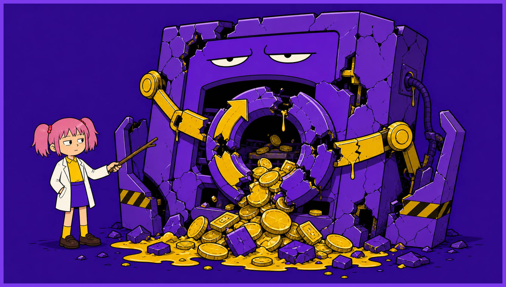
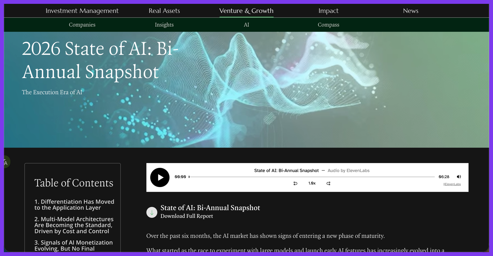

我先前觉得，AI 产品收费这事没什么好聊的。
平常用 GPT、Claude、Kimi Code，都是按月付费。我们以前做 AI MV 产品，脑子里默认的收费方式也还是月付。
一个人天天这样用，很容易长出一种懒惰的智慧：既然大家都按月收钱，那订阅制大概就是 AI 产品唯一被验证的盈利模式。

ICONIQ Growth 的《State of AI: Bi-Annual Snapshot》里有组数据：58% 的公司仍包含订阅或平台费组件，35% 使用用量计费，18% 使用结果计费，还有 37% 计划在未来 12 个月调整定价。
收费真正变形的地方，就藏在这另一回事里。
订阅没完。它的好处其实很朴素：门槛低，价格感知更平，普通人更愿意先上车。
麻烦在于，AI 产品不是传统 saas 产品那种边际成本很薄的买卖。
你多用一次，后面就可能多一截推理开销。偏偏用户买了订阅之后，又总想狠狠干回本。
很骄傲的说，我就经常干过这种事，睡觉前把 loop 挂上，让 Codex 继续改代码、改提示词，恨不得把额度薅成一块白地。早上醒来，心里有一种劳动人民终于薅到资本主义羊毛的朴素快乐。
平台要是假装没看见，那才叫神志不清。
所以现实才不会整齐地滑向另一头。
纯 API 用量计费对开发者和基础设施场景更自然，可对普通用户来说，每按一下都像在掏零钱，心理门槛高，收入也更容易跟着抖。
现实不是“订阅 vs API”谁把谁打死，而是谁都在找一套别把用户吓跑、也别把自己亏死的结构。
最后我只想拆掉旧教条，不想再立一个新教条。
订阅没有失效，失效的是“订阅制是 AI 产品唯一被验证的盈利模式”这句话。
至于结果计费之类的新说法，今天更像探路的杆子，不值得提前给它戴王冠。
以上就是我对AI产品收费模式的个人看法。谢谢你看完。